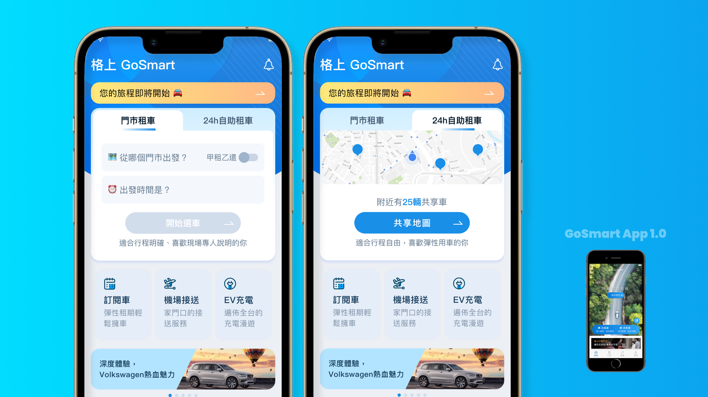
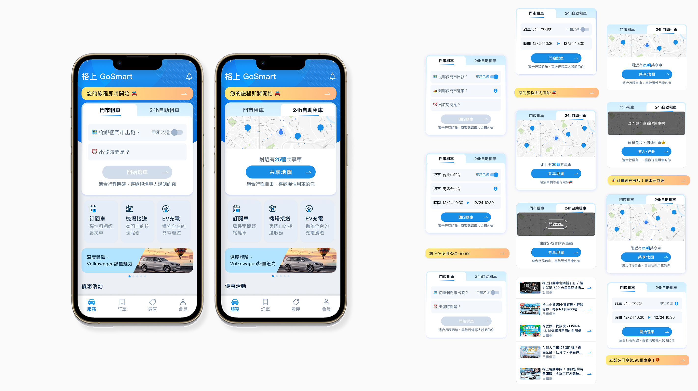
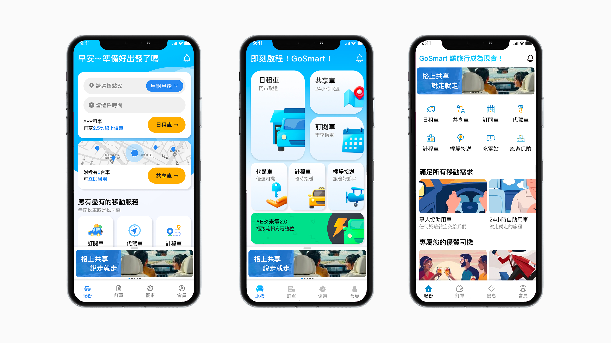
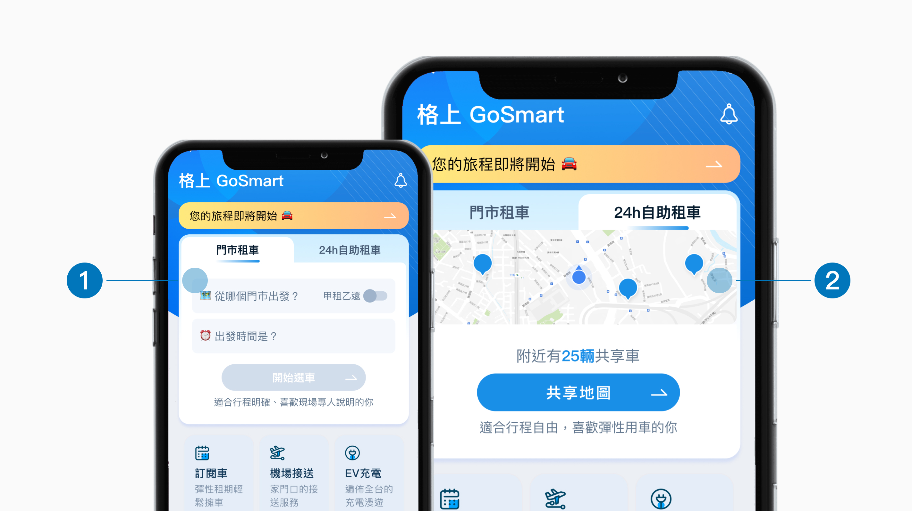
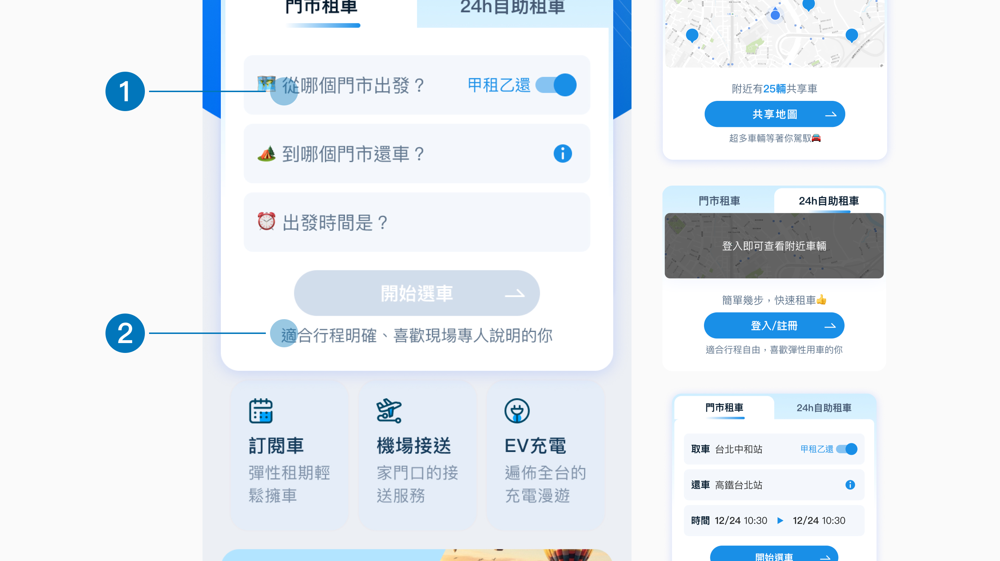
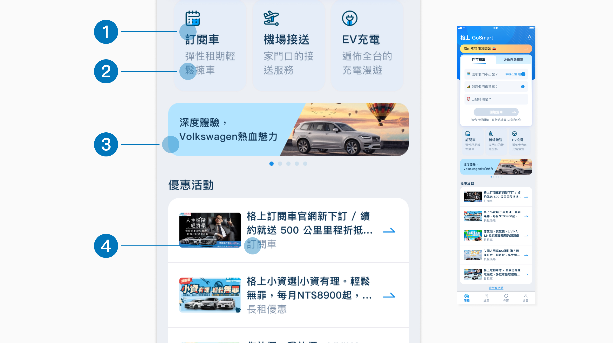
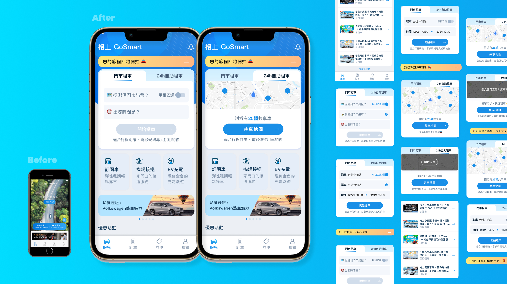

WORK・智慧移動
針對格上 GoSmart App 首頁重新規劃資訊架構，在維持既有日租車預訂效率的前提下，逐步納入代駕、機場接送、充電站等多元移動服務，並以情境化文案強化用戶與品牌的連結，逐步邁向涵蓋全域的數位移動平台。
合作對象
格上 GoSmart
研究時間
2024
專案類型
App
負責內容
設計策略、資訊架構、UX規劃、UI設計

首頁改版前後對比，新版強化多元服務入口與情境文案。
成果與結論
本專案重新規劃 GoSmart App 首頁資訊架構，在維持既有日租車預訂效率的基礎上，分層導入代駕、機場接送、充電站等多元移動服務入口，並以情境化文案取代制式描述，推動 GoSmart 從單次租車服務走向涵蓋全域的數位移動平台。
項
整合移動服務入口
%
首屏租車任務時間縮短
項
改版核心方向
本專案重點
隨著 MaaS（Mobility as a Service）移動即服務興起，各家品牌紛紛透過數位入口串連自身服務生態圈。格上集團擁有領先同業的數位開發能量與長期累積的用戶口碑，GoSmart App 首頁因此被賦予更關鍵的角色——不只是租車入口，更是集團對外展示移動生態圈願景的第一個接觸點。我在此脈絡下主導了這次首頁改版，從資訊架構到溝通語氣，重新定義 GoSmart 首頁該有的樣貌。
本專案設計流程
本次改版以格上內部既有市場觀察與用戶回饋共識為基礎，未另行安排前期研究，直接從釐清目標出發，探索下一階段服務的可能性，藉此定義改版重點，最後實現出具體的新首頁。
從市場觀察出發，釐清首頁改版要達成的目標與願景。
從公司、用戶、產品三面向，發散思考下一階段服務可能性。
收斂發散內容，定義三個面向對應的具體改版重點。
展開視覺與文案提案，發展新首頁的介面風格與情境文案。
設定目標
各家數位產品皆持續擴展服務場景以創造品牌價值，加上用戶對單一 App 滿足多元需求的期待提高。
格上擁有勝過同業的資訊團隊，在開發、迭代產品上較競品快速且有效率。
GoSmart 前一版已獲得多數用戶好評，新版首頁將繼續深化用戶體驗、提高忠誠度。
各家品牌都想打造自己的生態圈，GoSmart 有機會成為集團串連不同服務的重要載體。
| 理由 | 說明 |
|---|---|
| 滿足用戶多樣化的需求 | 用戶對數位產品的需求變得更加多元，期待一個應用程式滿足多種需求。 |
| 拓展市場佔有率 | 透過納入更多服務吸引不同需求的民眾，從而擴大用戶群體、增加影響力。 |
| 建構生態圈 | 透過建構車行生態圈，整合各種服務和資源，提供用戶全方位的服務和體驗。 |
| 創造異業合作的可能性 | 透過異業合作將對方服務整合到自己的應用中，為用戶提供更豐富的體驗。 |
目標
提供結構分明的新佈局，
讓所有服務一目瞭然，
並傳達格上生態圈的願景。
改版重點
在確立目標後，從公司面、用戶面、產品面分別提煉出多元移動服務、強化品牌溝通、未來擴充性的改版重點
Product
◆
呈現格上所有服務，滿足用戶任何跟「行」相關需求。
User
◆
藉由「使用情境」與用戶溝通，吸引用戶持續跟產品互動。
Company
◆
因應未來公司在數位服務的發展，預先保留擴充服務的空間。
新版首頁
新版首頁在維持日租車預訂效率的前提下，依登入狀態、租車模式等情境動態調整版面內容，並於下方分層加入共享車與多元服務入口，展現產品朝「數位移動平台」轉型的定位。

新版首頁涵蓋門市租車、24h自助租車、登入前後等多種情境畫面，皆保留第一屏快速預訂路徑。
其他風格嘗試
為了與團隊有效討論，在定案前針對「問候語氣、服務入口排序與資訊呈現方式」，延伸發展出三款不同的版面方案。

三款版面嘗試比較：問候語氣調整、服務排序調整、圖示與卡片呈現方式的比重差異。
三大設計方向
綜合上述版面嘗試的討論結果，本次改版收斂為三個核心設計方向，以下逐一說明各自的設計邏輯。
設計說明
新版首頁以「門市租車」與「24h自助租車」雙模式呈現：前者維持高效的欄位式預訂流程，後者則顯性化共享車「隨租隨還」優勢與周遭車輛動態，協助用戶依需求快速掌握服務特色、彈性選擇。

「門市租車」以欄位式輸入取還門市與時間；「24h自助租車」則以地圖呈現周邊可用共享車數量。
「門市租車」模式保留欄位式輸入（從哪個門市出發、還車門市、時間），讓用戶可在第一屏直接進入租車流程，不因服務擴增而拉長操作路徑。
「24h自助租車」模式以地圖顯示周邊共享車數量，方便性是用戶最大考量，讓用戶即時掌握周遭可用車輛。
設計說明
新版文案從單純的「功能引導」升級為「情境對話」：依租車模式標註對應的使用情境（如行程明確或用車彈性），並以生活化的口語與表情符號，在登入前後動態呈現對應鼓勵文案。

同一租車流程依「門市租車」與「24h自助租車」提供不同情境標語，並依登入狀態切換對應文案與行動呼籲。
以「簡單幾步，快速租車👍」、「超多車輛等著你駕馭🚗」等生活化口語搭配表情符號，創造產品與用戶的對話感。
在每個租車模式下標註對應情境描述，如「適合行程明確、喜歡現場專人說明的你」，協助用戶依自身需求快速判斷適合的服務。
設計說明
服務項目擴增後，首頁不只要降低用戶的認知門檻，也要承擔行銷曝光與跨事業單位露出的商業任務；本次改版同時處理「使用理解」與「行銷合作」兩個層次的需求。

服務區塊整合服務名稱與情境標語，下方並列廣告版位與跨單位優惠清單，兼顧使用理解與行銷露出。
對格上服務有一定暸解的用戶，可直接藉由服務名快速選擇使用。
每個服務卡片都搭配一句情境標語（如「彈性租期輕鬆擁車」），讓不熟悉服務內容的用戶也能快速理解定位。
新增大版位廣告輪播區塊，用於推廣異業合作或深度體驗活動（如試駕體驗），提升行銷曝光的效率與版位價值。
整合訂閱車、長租、日租等不同事業單位的優惠活動於同一清單，讓每個營業單位都有機會在首頁獲得曝光機會。
重點畫面總覽

Structure
◆
服務再多，只要入口分層清楚，用戶就不會在多元選項中迷路——結構本身就是一種易用性。
Empathy
◆
文案不是裝飾，而是替用戶先說出他們的疑問與期待，拉近品牌與用戶之間的距離。
Scalability
◆
好的首頁架構要為還沒上線的服務預留位置，而不是等服務推出才重新打掉重練。